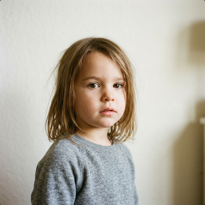
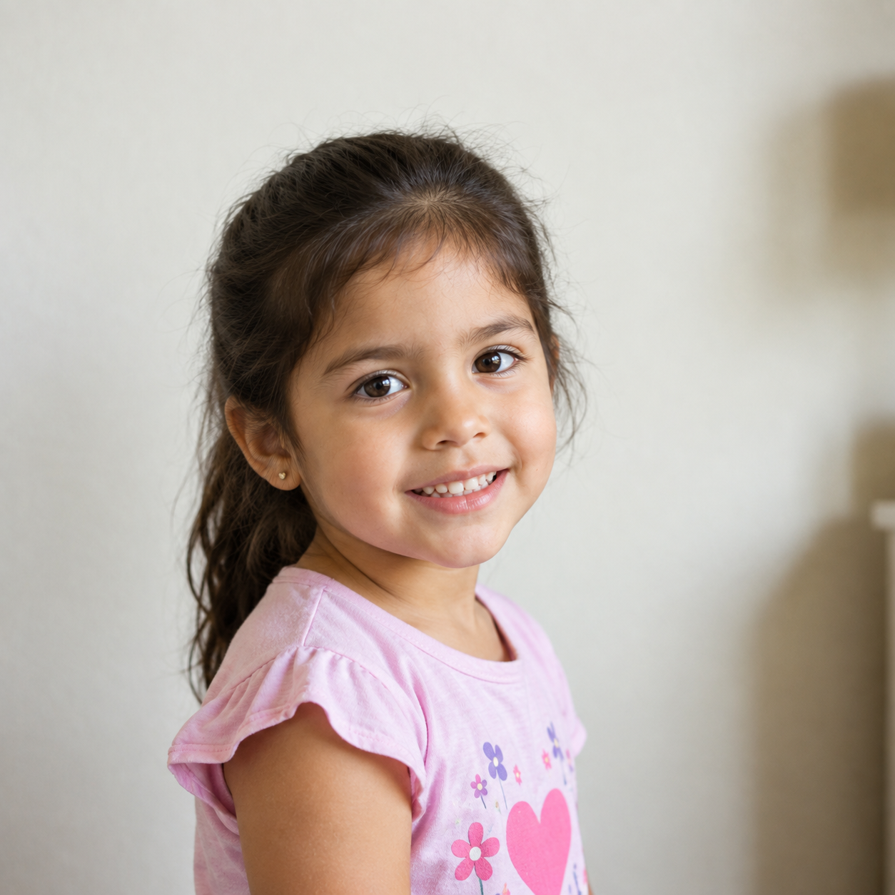

Alerta Sofía Nacional Activa
ALTO RIESGO INMINENTE
Buscamos a:
MATEO GABRIEL BENÍTEZ
- Edad:
- 4 años.
- Lugar de desaparición:
- Barrio San José Obrero, de la ciudad de Cosquín, Córdoba.
- Fecha de desaparición:
- 18/03/2026.
- Descripción física:
- Contextura física delgada, tez blanca, cabello castaño claro largo y ondulado a la altura de los hombros; ojos marrones, de 95 cm de altura aproximadamente.

Buscamos a:
SOFÍA VALENTINA RODRÍGUEZ
- Edad:
- 5 años.
- Lugar de desaparición:
- San Luis, Provincia de San Luis.
- Fecha de desaparición:
- 14/06/2025.
- Descripción física:
- Tez trigueña, cabello castaño oscuro lacio, ojos oscuros, 1.05m de altura aproximadamente.
Para aportar información
Confidencial y Gratuito
LLAMAR 134
Confidencial y Gratuito